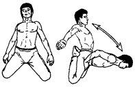

<- back
Next up: Голова гуся
Отдыхающий дракон

Исходное положение: Сидим на коленях, голени и подъемы стоп касаются пола, ягодицы касаются пяток.
Опираясь руками о пол, медленно отклоняемся телом назад и ложимся спиной на пол. В этом положении необходимо максимально расслабиться. Дышим спокойно. Затем возвращаемся в исходное положение. Для облегчения подъема целесообразно на первых порах верхнюю часть корпуса немного повернуть в любую сторону и опереться рукой об пол.
Next up: Голова гуся